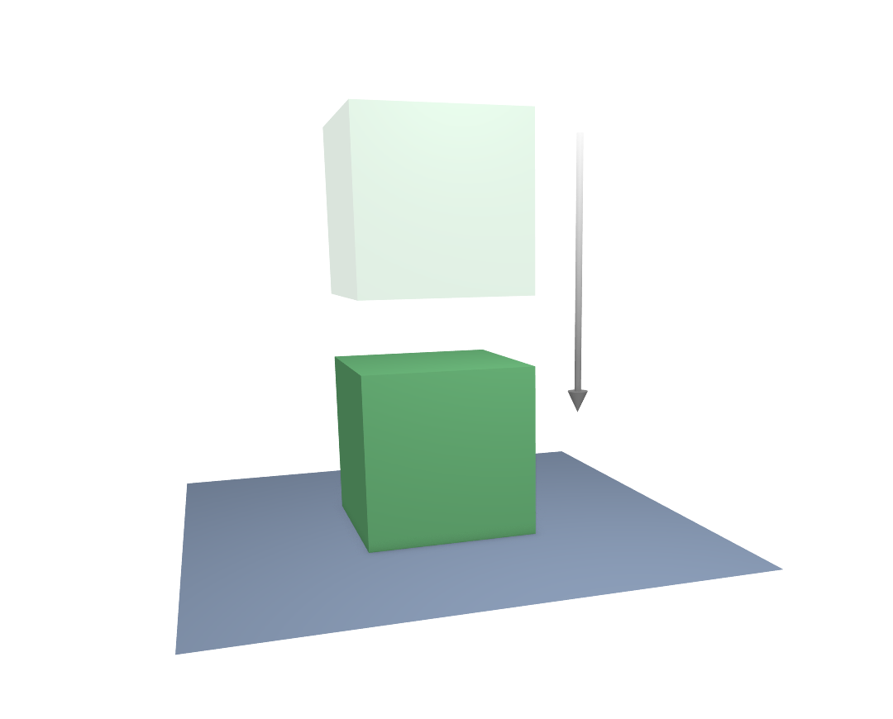
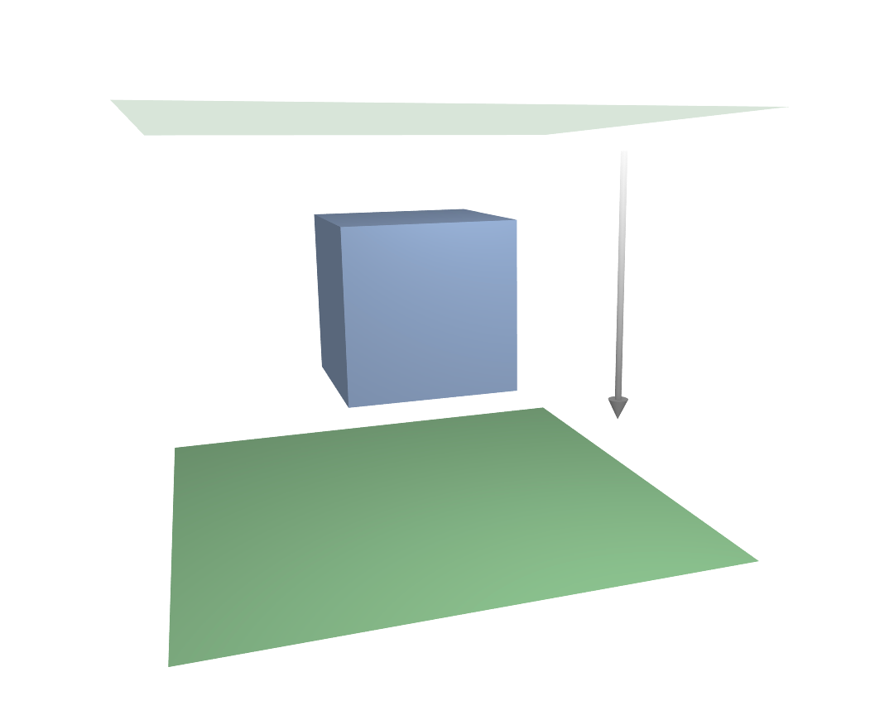

Зіткнення -- Collision¶
There are two different collision types that you may use: collision between different objects and internal collision. We should set one thing straight from the start: the primary targets of the collision calculation are the vertices of a soft body. So if you have too few vertices too few collision takes place. Secondarily, you can use edges and faces to improve the collision calculation.
Зіткнення з іншими об'єктами¶
For a soft body to collide with another object there are a few prerequisites:
- Якщо задано групу зіткнення -- Collision Group, то такий інший об'єкт повинен входити у цю групу. Інакше, обидва об'єкти мають мати спільний шар, хоча останній не обов'язково повинен бути видимим.
- Інший об'єкт зіткнення має бути сітьовим об'єктом.
- You have to activate the option Collision in the Collision panel of the Physics tab for the collision object. The collision object may also be a soft body.
- Якщо ви вживаєте такі модифікатори, як «Масив» -- Array та «Дзеркалення» -- Mirror, то повинні активувати EV.M.Stack для гарантування, що розрахунок зіткнення базується на модифікованому об'єкті. Послідовність модифікаторів -- Modifiers не важлива.
Приклади¶
A cube colliding with a plane works pretty well Fig. A soft body cube colliding with a plane., but a plane falls right through a cube that it is supposed to collide with Fig. A soft body plane colliding with a cube, so no interaction at all.. Why is that? Because the default method of calculation only checks to see if the four vertices of the plane collides with the cube as the plane is pulled down by gravity. You can activate Face to enable collision between the face of the plane and the object instead, but this type of calculation takes much longer.
Давайте ближче подивимося на розрахунок зіткнення, щоб ви могли мати уявлення, як ми можемо його оптимізувати.

A soft body cube colliding with a plane. |

A soft body plane colliding with a cube, so no interaction at all. |
Розрахування зіткнень¶
Soft body simulations are by default done on a per-vertex basis. If the vertices of the soft body do not collide with the collision object, there will be no interaction between the two objects.
In the video below, you can see a vertex colliding with a plane. If a vertex penetrates the zone between Outer and Inner, it is repulsed by a force in the direction of the face normal. The position that a vertex finally ends up in is dependent on the forces that act upon it. In the example gravity and the repulsion force of the face balance out. The speed at which the vertex is pulled out of the collision zone is influenced by the Choke parameter in the Soft Body Solver settings.
Now lets see what happens if we make vertices heavier and let them travel at a faster speed. In the video above, you can see vertices traveling at different speeds. The two on the far right (5 and 6) are traveling so fast that they pass right through the collision zone (this is because of the default solver precision, which we can fix later). You will notice that the fourth vertex also travels quite fast and because it is heavier it breaches the inner zone. The first three vertices collide correctly.
Для розрахування зіткнення можуть також використовуватися Ребра -- Edge та Грані -- Face.
Ви можете укласти зіткнення так, щоб ребра та навіть грані включалися у розрахунок зіткнення -- Для розрахування зіткнення можуть також використовуватися Ребра -- Edge та Грані -- Face.. Зіткнення тоді розраховується по-іншому. Перевіряється чи ребро або грань м'якотілого об'єкта перетинається з об'єктом зіткнення, а зони зіткнення вже не використовується.
Xem thêm
Download the blend-file.
Добрі зіткнення¶
Якщо зіткнення, яке ви уклали, не поводиться належно, то ви можете спробувати наступне:
Mẹo
Найкращий спосіб
Add Loop Cuts to the soft body object in strategic areas that you know are most likely to be involved in a collision.
- The soft body object must have more subdivisions than the collision object.
- Перевірте напрямок нормалей граней.
- If the collision object has sharp spikes, they might penetrate the soft body.
- The resolution of the solver must match the speed at which soft body vertices are traveling. Lower the parameter Error Limit and carefully increase Min Step.
- Значення Outer та Inner для об'єкта зіткнення повинні бути достатньо великими, але зони протилежних граней не повинні перекриватися і ви не маєте мати сили у протилежних напрямках.
- Якщо ви вживаєте сильні сили, то ви повинні використовувати великі зони.
- Задайте для Choke достатньо високе значення (для усієї імітації, якщо необхідно), якщо ви маєте труднощі з виштовханими вершинами.
- Зіткненням граней важко керувати та воно потребує більше часу на розрахування. Намагайтеся не використовувати грані для зіткнення.
Часто краще створити спрощену сіть для використання як об'єкта зіткнення, однак, це може бути важко, якщо ви вживаєте для цього анімовану сіть.
Self-Collisions¶
For information on self-collision please refer to the Self-Collision settings.